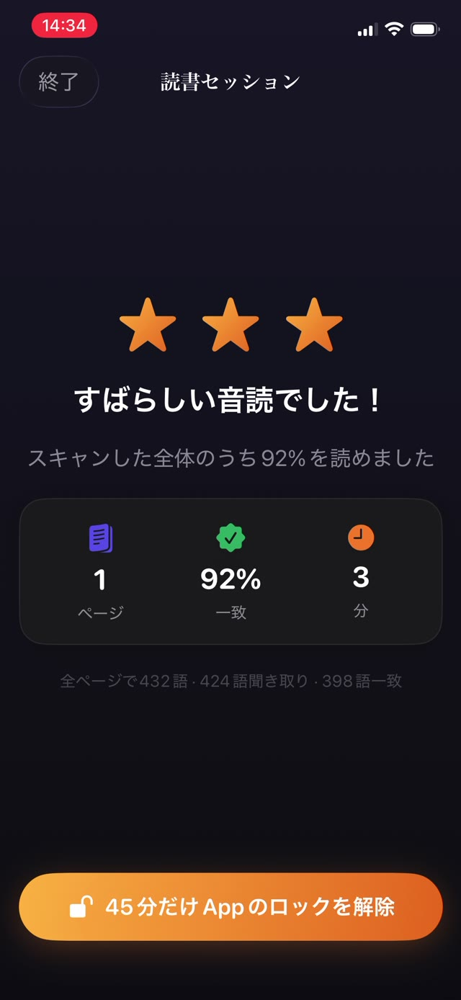

関わっている全員がこれを知っています。記録が実際に何のためにあるのかを理解する価値はあります。答えによって、どれだけ手間をかける意味があるかが変わるからです。


先生が本当に見ているもの
たいていは書名ではありません。読書記録は一つの問いの代わりです。この子は家で定期的に読んでいるか。児童が30人で先生が1人なら直接の観察は不可能なので、記録がその代わりをします。
つまり役に立つ信号は頻度と継続であって、文学的な価値ではありません。別々の夜に12回20分ずつのほうが、土曜に4時間よりずっと多くを先生に伝えます。
紙の記録がフィクションに寄る理由
- 後から書かれるもので、先週の火曜の読書についての人間の記憶はほぼ無価値です。
- 読書が起きたまさにその瞬間に、保護者がその場にいて手が空いていたことを前提にしています。
- 評価される本人が自己申告するもので、これはどんな測定でも問題になります。
- 事実と同じ手軽さで意図も記録され、後から誰にも区別がつきません。
正直な記録に入っているもの
つけるのであれば、記憶から復元できないものを記録させてください。
- 各セッションの日付と時刻。日付だけではなく。
- 実際に続いた長さ。続くはずだった長さではなく。
- 何を読んだか。本と、できればその箇所。
- 自分でつけたチェックではなく、読書が起きた証拠。
記録を自動にする
いちばん信頼できる記録は、誰も書き込むのを覚えていなくていい記録です。記録が読書そのものの副産物なら、ずれることも、後から埋めることもできず、日曜の夜の正直さにも依存しません。
盛られた記録の気まずさも消えます。記録を信じられる先生はそれをもとに動けますが、飾りだと疑う先生は無視します。そうなれば無駄な作業だったことになります。
先生に渡す PDF を書き出す
Guardian Reader はすべての読書セッションを自動で保存します。日付と時刻、ページ数、分数、一致率、そしてお子さまが実際に声に出して読んだ本文です。
Premium では、その全部を「記録」タブから PDF として書き出せます。メールでも印刷でもすぐ渡せます。最後の最後に思い出したものではなく、確認済みのセッションから作られた、家庭での練習の本物の記録です。
確認済みの音読から作られる記録
各セッションはその場でスキャンしたページと照合されるので、この記録は読書についての主張ではありません。読書の副産物です。その違いこそが、この書き出しを学校に渡す価値のあるものにしています。